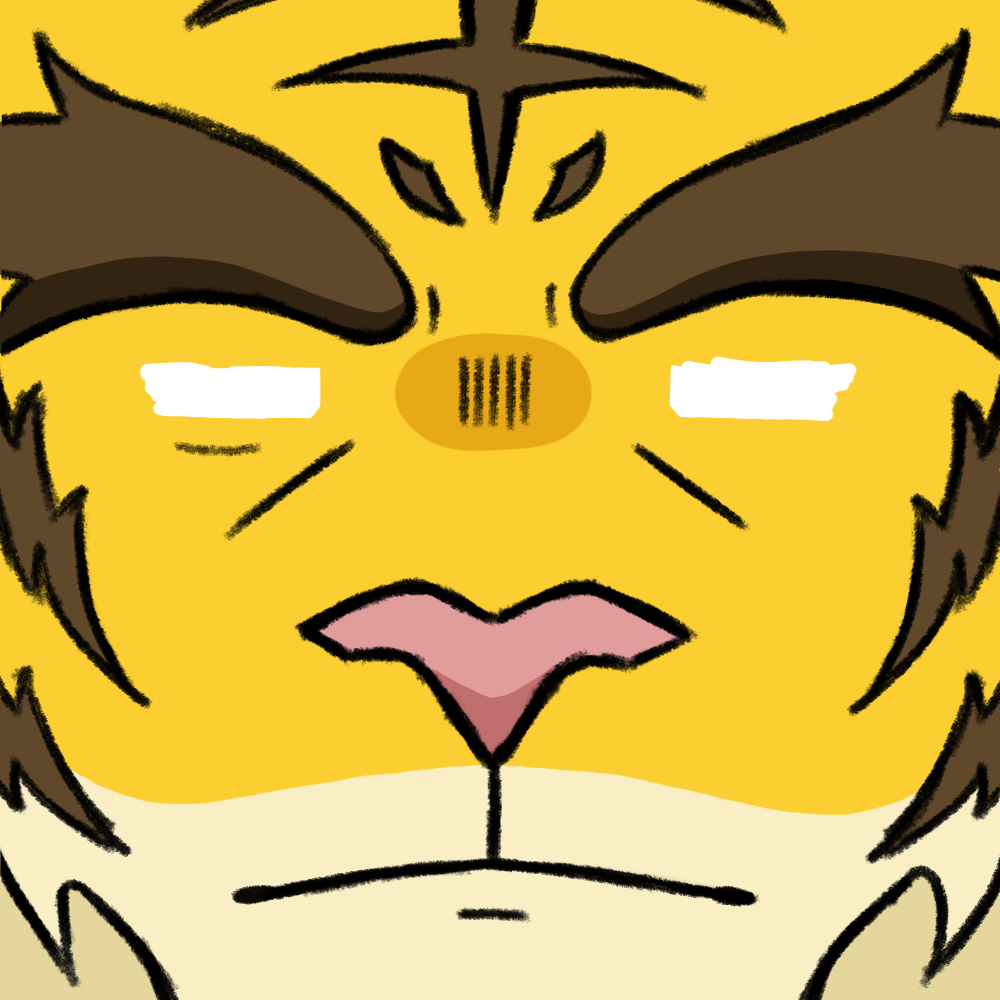

superpower超能力

- move cursor around to make eyes follow
- click on his face to make him blink
- click to toggle no glasses/glasses
- Leonel's superpower is having super vision! He was born with significantly better eyesight than anyone else: he can see precise details from far away, which makes him very attentive. His vision is like a camera! However, this doesn't come with consequences. His eyes are extremely sensitive to light, and using too much of this power causes him to have headaches and dizziness. It also makes him look very haggard! That's why he wears special glasses that help him suppress this power, making his vision like a normal human's. He mostly uses them in the office and indoors, since he doesn't like wearing glasses around other people.
- Leonel的超能力是擁有超視覺！ 他天生的視力比任何人都好：他可以從遠處看到 精確的細節，這讓他非常專注。 他的視野就像一臺相機！ 然而，這並沒有帶來後果。 他的眼睛對光線非常敏感， 過度使用這種能量會導致他頭痛和頭暈。 這也讓他看起來很憔悴！這就是為什麼他戴著特殊的眼鏡來幫助他抑制這種 力量，使他的視力像正常人一樣。 他大多在辦公室和室內使用眼鏡，因為他不喜歡在別人身邊戴眼鏡。